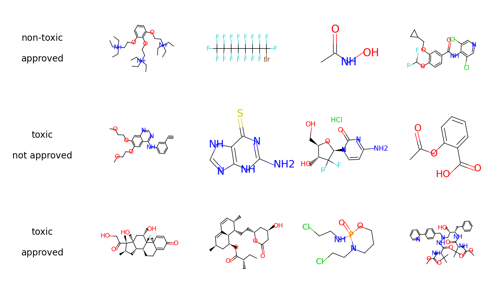

Quick Start#
Tensor-based Graphs#
Graphs#
Graphs are the fundamental data structure used in TorchDrug. They can be viewed as a generalization of graph processing libraries (e.g., NetworkX) in a tensor framework, while enjoy the GPU acceleration and auto differentiation.
import torchdrug as td
from torchdrug import data
edge_list = [[0, 1], [1, 2], [2, 3], [3, 4], [4, 5], [5, 0]]
graph = data.Graph(edge_list, num_node=6)
graph.visualize()

Molecules#
A specfic instance of graphs in drug discovery is a molecule, which may have additional chemical constraints and features. For example, we can construct a molecule from SMILES string. SMILES is a language that describes complex molecule structures using a linear string.
mol = data.Molecule.from_smiles("C1=CC=CC=C1")
mol.visualize()
print(mol.node_feature.shape)
print(mol.edge_feature.shape)

torch.Size([6, 69])
torch.Size([12, 19])
Graph Operations#
A group of arbitrary graphs can also be processed as a batch to maximize the
utilization of hardware. They can also be transferred between CPUs and GPUs using
cpu() and cuda() methods.
smiles_list = ["CCSCCSP(=S)(OC)OC", "CCOC(=O)N",
"N(Nc1ccccc1)c2ccccc2", "NC(=O)c1cccnc1"]
mols = data.PackedMolecule.from_smiles(smiles_list)
mols.visualize()
mols = mols.cuda()
print(mols)

PackedMolecule(batch_size=4, num_atoms=[12, 6, 14, 9], num_bonds=[22, 10, 30, 18],
device='cuda:0')
Just like original PyTorch tensors, graphs support a wide range of indexing operations. Typical usages include applying node masking, edge masking or graph masking. The following example shows how to select edges that contain at least one carbon. For more graph operations, please see the notes.
node_in, node_out, bond_type = mols.edge_list.t()
edge_mask = (mols.atom_type[node_in] == td.CARBON) | \
(mols.atom_type[node_out] == td.CARBON)
mols = mols.edge_mask(edge_mask)
mols.visualize()

A Molecule Classifier#
Now we demonstrate how to use TorchDrug to create a molecule classifier. Specifically, TorchDrug provides us with a large collection of popular datasets and models for drug discovery and graph representation learning. These help us avoid writing and debugging boilerplate code.
For this tutorial, we use the ClinTox dataset. This dataset requires to predict whether a molecule is toxic in clinical trials, and whether it is approved by FDA.
Load and Prepare Dataset Splits#
First of all, we load the dataset with TorchDrug. TorchDrug will automatically download the dataset into the path you specify.
We then split the dataset into train, validation and test, with a ratio of 8:1:1.
import torch
from torchdrug import datasets
dataset = datasets.ClinTox("~/molecule-datasets/")
lengths = [int(0.8 * len(dataset)), int(0.1 * len(dataset))]
lengths += [len(dataset) - sum(lengths)]
train_set, valid_set, test_set = torch.utils.data.random_split(dataset, lengths)
Define a Graph Neural Network for Classification#
We define a graph neural network to encode the molecule graphs. Specifically, we use the a Graph Isomorphism Network (GIN) with 4 hidden layers.
from torchdrug import core, models, tasks
model = models.GIN(input_dim=dataset.node_feature_dim,
hidden_dims=[256, 256, 256, 256],
short_cut=True, batch_norm=True, concat_hidden=True)
Note the model is simply a neural network without any training target. To adapt it for classification, we wrap it with a property prediction module. We define the classification task by the binary cross entropy (BCE) criterion.
task = tasks.PropertyPrediction(model, task=dataset.tasks,
criterion="bce", metric=("auprc", "auroc"))
Train the Model#
We create an optimizer for the parameters in the task, and combine everything into
core.Engine. The engine provides convenient
routines for training and test.
optimizer = torch.optim.Adam(task.parameters(), lr=1e-3)
solver = core.Engine(task, train_set, valid_set, test_set, optimizer,
batch_size=1024)
solver.train(num_epoch=100)
If we have any GPU, we can specify it in the engine to accelerate training.
solver = core.Engine(task, train_set, valid_set, test_set, optimizer,
batch_size=1024, gpus=[0])
More acceleration can be achieved by multiple GPUs. In this case, we need to launch
the script using python -m torch.distributed.launch --nproc_per_node=4.
solver = core.Engine(task, train_set, valid_set, test_set, optimizer,
batch_size=256, gpus=[0, 1, 2, 3])
We may log the training and evaluation metrics to Weights & Biases platform for better experiment tracking in the browser.
solver = core.Engine(task, train_set, valid_set, test_set, optimizer,
batch_size=1024, logger="wandb")
Test the Model#
To test the model on validation set, it only takes one line.
solver.evaluate("valid")
Alternatively, we can make prediction on arbitrary input batches. The following code shows the prediction for the first 8 samples in the validation set.
batch = data.graph_collate(valid_set[:8])
pred = task.predict(batch)
Save and Load#
Let’s save our trained model. We dump our model into two parts, where
clintox_gin.json contains the hyperparameters, and clintox_gin.pth contains
the trained weights.
import json
with open("clintox_gin.json", "w") as fout:
json.dump(solver.config_dict(), fout)
solver.save("clintox_gin.pth")
To load a pretrained model, we don’t bother to define the model again. Use
core.Configurable.load_config_dict
and TorchDrug will automatically parse the model from the hyperparameters.
with open("clintox_gin.json", "r") as fin:
solver = core.Configurable.load_config_dict(json.load(fin))
solver.load("clintox_gin.pth")